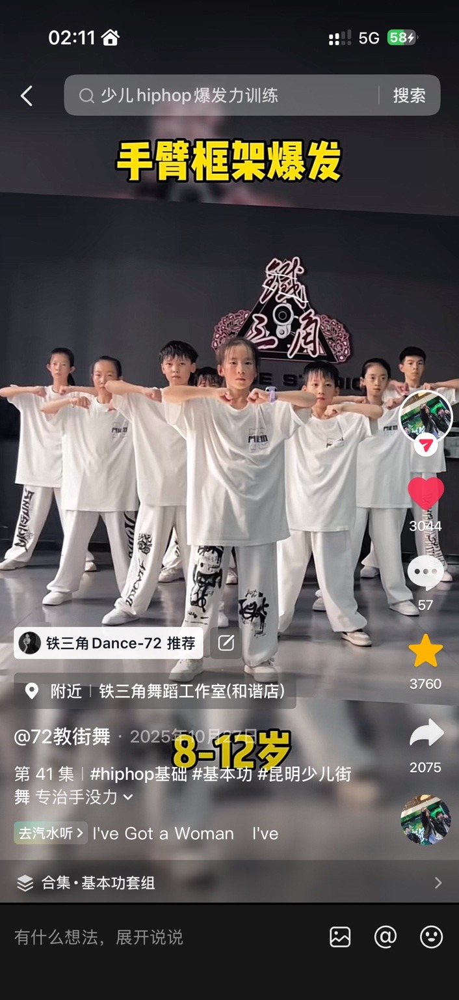
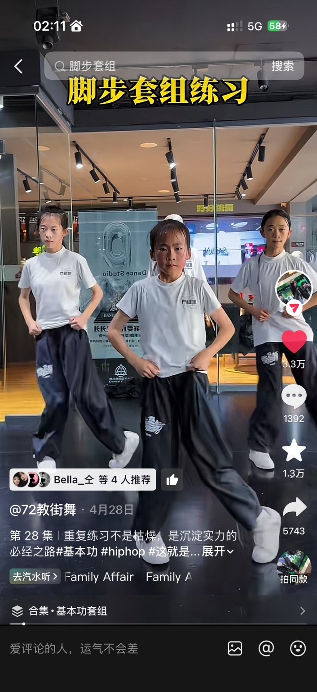
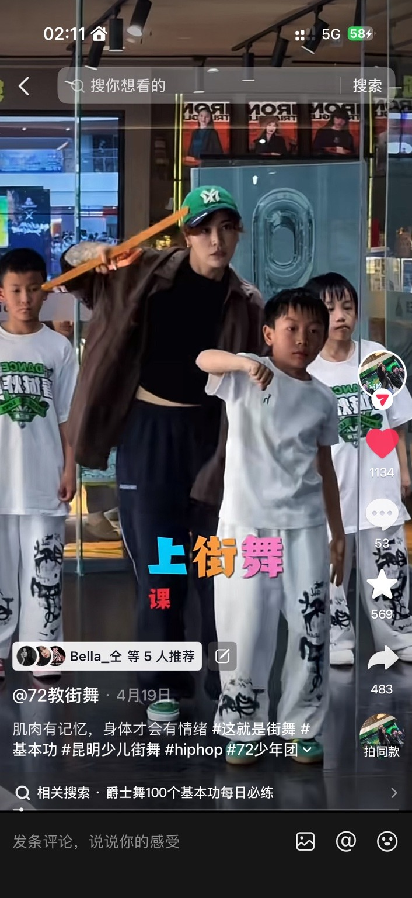
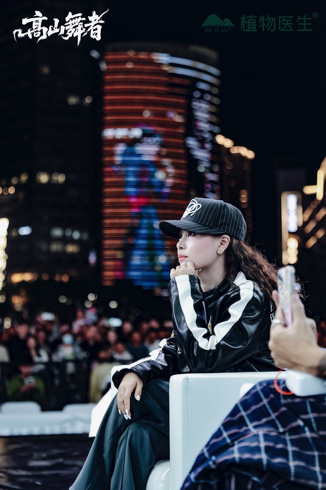
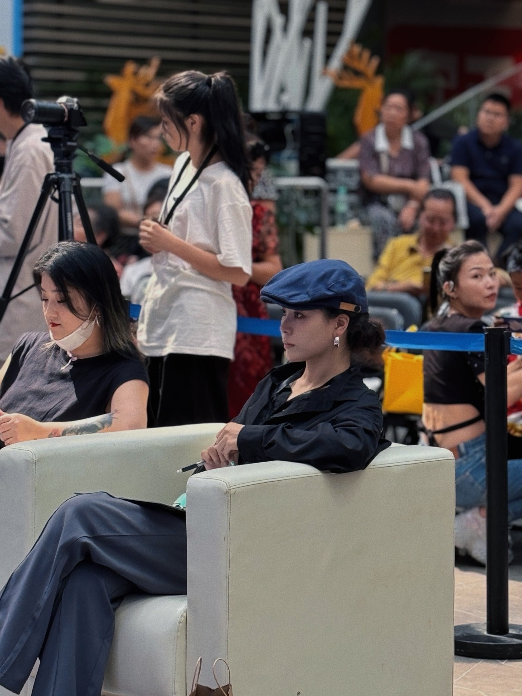
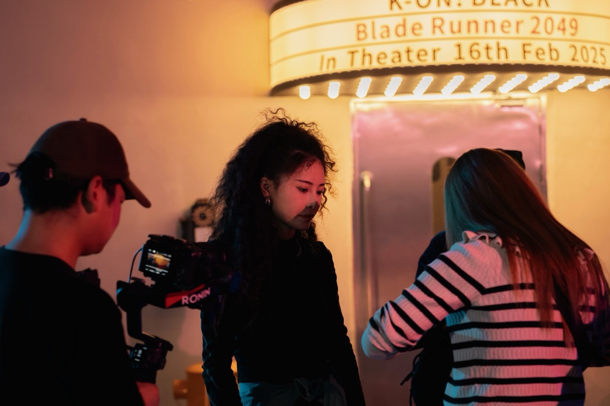
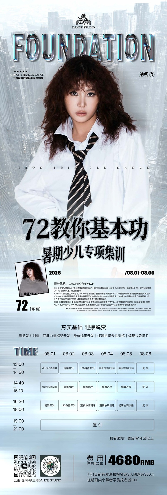

01
IDENTITY
核心身份
- 72
- 铁三角舞蹈品牌创始人
- 铁三角Crew名誉队长
- 昆明市街舞运动协会副会长
- 街舞编舞师 / 街舞导师
- 教龄10年
- 少儿街舞教学与训练体系建设者
- 擅长风格：Choreography / Hiphop
CHOREOGRAPHY · HIPHOP · KUNMING
72，街舞编舞师、导师，铁三角舞蹈品牌创始人。教龄10年，专注少儿街舞教学、Hiphop基本功训练、叙事型编舞编排与舞台作品指导。
以基础训练建立身体能力，以叙事编舞连接音乐、人物与情绪，让学员在课堂和舞台中找到真正的表达。
 72 / KUNMING
72 / KUNMING
ABOUT 72
课堂强调 Foundation、Groove、Isolation 与音乐理解，让学员从“记动作”进入“真正会跳舞”的表达状态。
围绕基础、律动、身体控制与舞台表达，持续建立清晰、稳定、可复盘的训练方式。
身高 165CM / 体重 50KG / 鞋码 37 / 服装尺码 S-XL / 云南昆明
EXPERIENCE
以身份、方向、赛事作品与裁判经历整理专业路径，便于快速了解履历重点。
IDENTITY
SPECIALTY
AWARDS & WORKS
2016AUDC 云南赛区齐舞冠军
2017HHI 世界街舞大赛云南赛区齐舞冠军
2020DND 街舞超级联赛云南赛区齐舞冠军
2021重庆舞动山城街舞挑战赛最具风格奖
2021好好跳舞 Camp 小组赛冠军
2022M All Star 国际齐舞大赛云南赛区亚军
2022重庆舞动山城街舞挑战赛优秀团队奖
2024HHI 街舞锦标赛云南赛区青少年大齐舞冠军作品编导
2025大理漾濞阿尼么宣传主题曲舞蹈编导
2025《开始跳舞吧》秦皇岛闪特街舞作品编舞师
2026《开始跳舞吧》云南赛区冠军及亚军作品编舞师
JUDGE EXPERIENCE
云南新力量街舞大赛 Vol.4.5 齐舞裁判
2021《这就是街舞》决赛大众评审
2023 Show Me 无畏街舞挑战赛裁判
2023 云南省青少年校园街舞俱乐部联赛裁判员
2024 拾舞贰拾街舞赛齐舞裁判
2024 百舞金项奖裁判
2025 青少年体育舞蹈全国公开赛裁判员
2025 舞动山河星灿杯青少年体育舞蹈展演裁判
2025 云南省“勤锻炼”校园街舞联赛总决赛裁判员
2025 唯酷第四届巅峰对决齐舞大赛裁判
2026 巅峰对决总决赛裁判
2026 与星共舞舞蹈大赛裁判
TEACHING METHOD
TEACHING VIDEOS
通过基础训练、身体控制、律动练习与教学观点，了解72的课堂训练方式。

▶01 / FOUNDATION
▶02 / FOOTWORK
▶03 / MINDSETVISUAL ARCHIVE
保留不同阶段影像的视觉节奏与留白。




CONTACT / BOOKING / COLLABORATION
课程咨询、报名排课与商业合作，请按对应方向联系小助理童童或 72 老师本人。